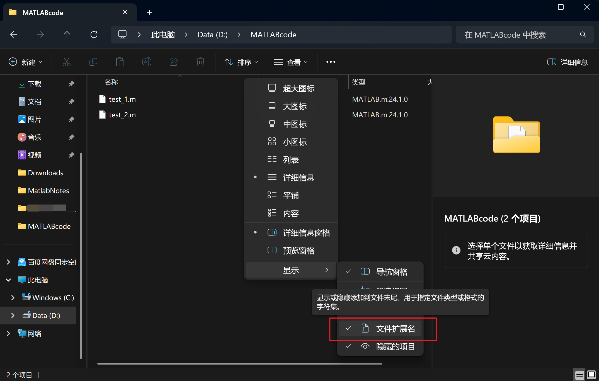

前言
对MATLAB的简单介绍
援引维基百科的科普
MATLAB
MATLAB（Matrix Laboratory，矩阵实验室）是由美国The MathWorks公司出品的商业数学软件。MATLAB是一种用于算法开发、数据可视化、数据分析以及数值计算的高级技术计算语言和交互式环境。除矩阵运算、绘制函数/数据图像等常用功能外，MATLAB还可用来创建用户界面，以及调用其它语言（包括C、C++、Java、Python、FORTRAN）编写的程序。
它的历史等等我就不多做赘述了，感兴趣的朋友可以自行查阅。MATLAB主要用于数值计算但是想想都觉得内存这么大仅用作计算器很离谱吧但除了独具特色的矩阵运算，它还拥有大量功能强大的附加工具箱，适合不同领域的应用，例如控制系统设计与分析、影像处理、深度学习、信号处理与通讯、金融建模和分析等。
R2017b后的MATLAB版本加入了人工智能领域深度学习的工具，虽然业内更广泛流行使用Python学习相关内容，但MATLAB在建模和工程计算中效率更高，许多功能函数都带有算法的自适应能力，且算法先进。
对于一种语言来说，无论功能多么强大，如果学习起来非常艰辛，那都算不上成功。而MATLAB 是成功的，它允许用户以数学形式的语言编写程序，与C语言有相似之处，但更接近于书写计算公式。相信朋友们大学里都或多或少接触过C语言这门编程语言，负责任的说，MATLAB比C语言易上手，所以大家不要有太多压力，相信带着使用工具的学习理念开始观看本指南，会有更多自信，毕竟学习目的就是会用即可，不必精通。
如何获取MATLAB的使用权
由于MATLAB是一款商用软件，这就意味着通常需要购买才能使用这款软件（并非小数目！）。不过，大家依然可以通过以下几个方式免费使用MATLAB：
- MATLAB和许多高校有合作，提供校园身份可以申请免费使用MATLAB用于学习和科研
- 国内的部分高校有购买MATLAB的校园区域使用权，你已经交了学费为什么不白嫖学校的MATLAB令牌？
非要自己掏钱买的话只好替你学校翻一下白眼了 - MATLAB还赞助许多竞赛（数模就曾经被赞助过），可以在参赛流程期间申请免费使用相关产品
- 如果以上方案都行不通，可以在MATLAB官网注册账号后开始
30天的免费试用，以及每月有一定额度的MATLAB在线版 - 虽然说支持正版，但是MathWorks自己都对全球肆虐的破解版软件态度暧昧👉👈自己找找看！
补充说明
或者找人帮忙解决这个问题，比如我。
- 大悲剧：如果你的学校在MathWorks公司的制裁名单上，那么似乎学习用途的MATLAB只好用破解版了。但是最好不要用作学术成果展示的方式（MathWorks公司爱打官司），建议跑路去Python或开源的GNU Octave（语法与MATLAB基本兼容），这个MATLAB不用也罢
一些注意事项
-
因为笔者也正在学习使用MATLAB，且此指北的第一版主要写与
L同学当作闲暇读物，故而主要围绕数据可视化与数学建模展开。本指南的第一部分将带你从地球环境问题出发，最终成为能够解决火星基地环境挑战的MATLAB高手，往后还会有不同学科的续写，以及对已有内容的增删补改。因为是匆匆十天的仓促产物，不准确不正确的部分相当可能存在，还望不吝指出。 -
本指南中涉及的案例数据都尽可能取自官方数据，并且会在各个案例中附带原始数据的出处，可能会有令人望而生畏的引用格式，但是请放心，相信你强大的学习能力能够游刃有余地处理这些被你赋予意义的数据（是的，这些数据正是被你可视化展现才拥有了有秩序的意义）
-
与其说是指南，倒不如说是拙劣的指北笔者选择的专业是CS，所以选择用计算机行业的代码库github存放网页的文本内容以及部分源码。这里确实是计算机领域学习的宝地，但是笔者无意捧高它，依然欢迎任何人在我此项目仓库的Issues界面提出你认为有必要的问题和指正，笔者会一一处理。如果你想对本仓库做出贡献，当然可以fork到本地做出修改，修改好后随时可以向我发出合并申请！(●'◡'●)
提问
可以通过网页右上角搜索框旁边的仓库图标进入本网页的代码库，点击Issues选项卡跳转到提出问题界面，你可以添加一个Issue描述问题，我会及时处理。
如果你对本指北有任何疑问，欢迎在Issues界面提出，我会尽力解答。如果这对你有帮助，欢迎给我点个Star，这对我来说是莫大的鼓励！
一些学习资源
- 学习某种语言或工具当然首选参考资料是官方文档 ，不过就像不建议汉语学习者查看字典来学习一样，官方文档是专业而准确的，但是缺少一定的实践性（大约可以这么说吧）
- 推荐两个github仓库：一个是awesome-matlab，这里汇集了大量MATLAB学习资源清单；另一个就是MathModel，这里汇总了数模比赛的本科生组和研究生组的获奖作品，非常适合参考学习
- 很多人入门MATLAB会选择的经典读物《MATLAB2018从入门到精通》的PDF版，前几页是抽象图片的纯扫描，从目录开始就是电子稿，可以有选择性地攻读自己想要掌握的部分章节
一些前置设置
- 最好打开
显示文件扩展名这个设置，.m是MATLAB编写程序文件的标准后缀。以后面对不同格式的数据，你必须要确认是什么类型的数据才能选择合适的处理方法啊

- 记住一些常用的快捷键：
Ctrl + C:复制Ctrl + V:粘贴Ctrl + S:保存Alt + F4:关闭当前窗口
说明
本指南使用R2017a及以后的MATLAB版本即可跟随练习，笔者目前正在使用的是R2024a版本。
最好提前安装Mapping Toolbox工具箱，相当一部分案例会使用这个地理信息工具箱。
不要在开始前退缩，其实你只需要高中水平的数学基础以及一点点好奇心
提示
R2024a是标准版本号，a代表alpha，可能会有一些bug，但放心使用便是。b则是正式版本，R仅仅意为一次版本更新，2024则代表2024年发布的版本。
教育版本一般内置好了一些工具箱（例如Mapping Toolbox），而标准版本则需要自行安装。
learning by doing
最后来说说为什么要用文档的形式，因为比起视频教学，读文档更适合自学，文档更能激发一个人动手敲代码的欲望，看视频更容易想当然地认为自己已经会敲代码了，而事实往往是相反的。读文档会让你更倾向于思考，更容易让你明白自己的学习侧重方向，而不是被视频教程的内容所限制。